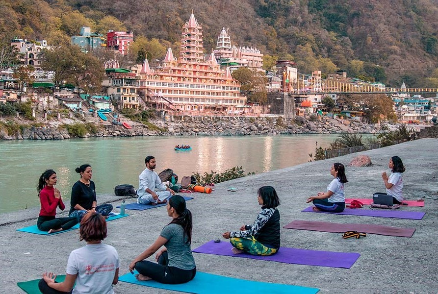

Adventure Activities
Rafting.

Trekking.
Yoga Retreats.

Bungee Jumping.
Where the Ganges whispers secrets of the cosmos
to those who dare to listen.
Nestled in the verdant embrace of the Himalayan foothills, Rishikesh stands as a timeless sanctuary of
serenity and spirituality. This hallowed town, where the Ganges River courses through, has woven itself into
the very fabric of human existence, offering seekers a sacred realm where the mundane fades, and the divine
beckons. With a history as ancient as the mountains themselves, Rishikesh emerges as a tranquil haven where
the soul finds solace, and the heart's journey to enlightenment is etched upon the very earth.
Enshrined in myth and legend, Rishikesh's origins trace back to a time when sages and seers traversed its
undulating terrains in pursuit of inner wisdom. Carrying the whispers of ages past, the land resonates with
the echoes of meditative chants and ethereal revelations. Once a favored abode of sages such as Raibhya
Rishi, whose spiritual endeavors are said to have lent the town its name, Rishikesh is a crucible of
devotion and introspection.
Rishikesh stands as a living canvas, where each edifice, temple, and
ashram imparts its own chapter to the spiritual narrative. The ashrams, nestled amidst the green canopy,
serve as sanctuaries of reflection, where the teachings of yoga, meditation, and philosophy unfurl like
petals of a lotus. The revered Parmarth Niketan, a cornerstone of Rishikesh's spiritual legacy, orchestrates
daily rituals that bridge the mortal realm with the transcendental.
The Aarti ceremony at Triveni Ghat @ 7pm, Parmarth Niketan, is a mesmerizing and deeply spiritual event. As twilight descends, the ghat comes alive with flickering oil lamps and the scent of incense. Priests perform synchronized rituals, holding aloft aarti lamps that cast a golden glow on the Ganges. Chants and prayers fill the air as devotees gather, creating a sense of unity and reverence. The climax comes as lamps are set afloat on the river, symbolizing the release of earthly burdens. This ritual, bridging the gap between the material and divine, leaves a profound impression on all who witness it.
Cross the iconic suspension bridge to enter the vibrant heart of Rishikesh's spiritual landscape at Ram Jhula. The bustling market on the other side is a colorful mosaic of cultures, offering textiles, spices, and local delicacies. Amidst the lively scene, you'll find hidden temples and meditation centers. Ram Jhula isn't just a bridge, but a doorway to self-discovery, where modern life and ancient traditions harmoniously coexist, inviting you to become a part of Rishikesh's enduring tale.
Rafting.
Trekking.
Yoga Retreats.
Bungee Jumping.
Ready to embark on your Rishikesh journey?
Contact us for more information.